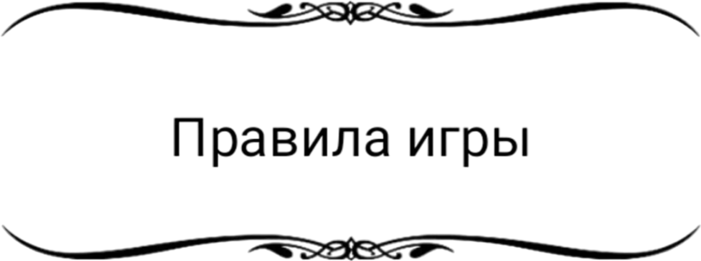
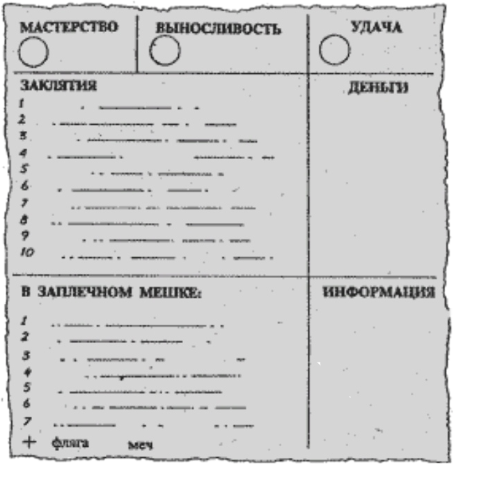
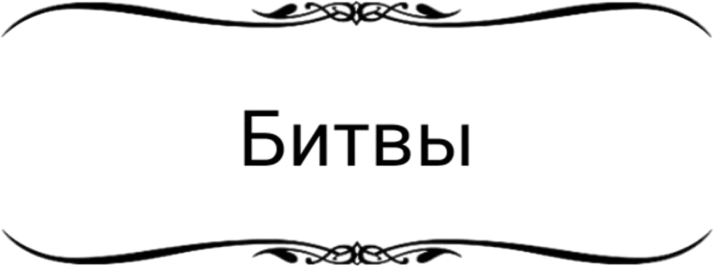
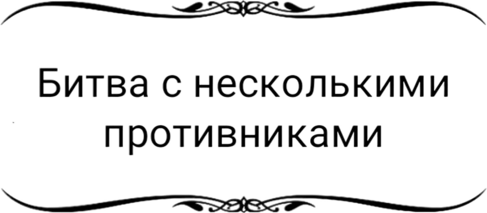
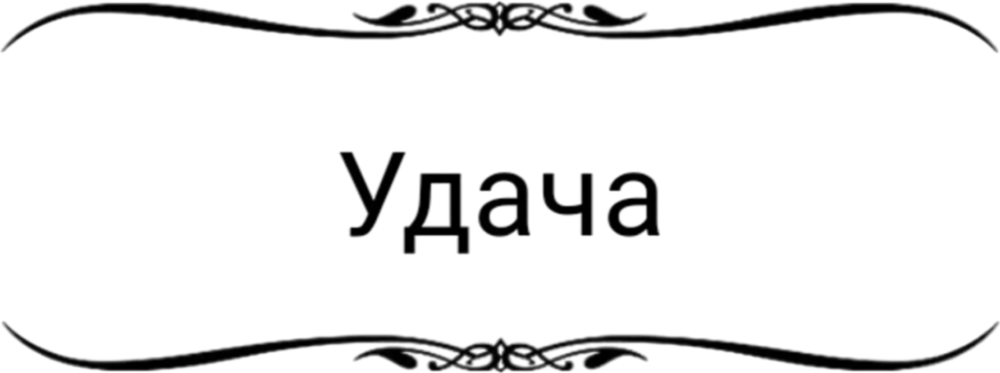
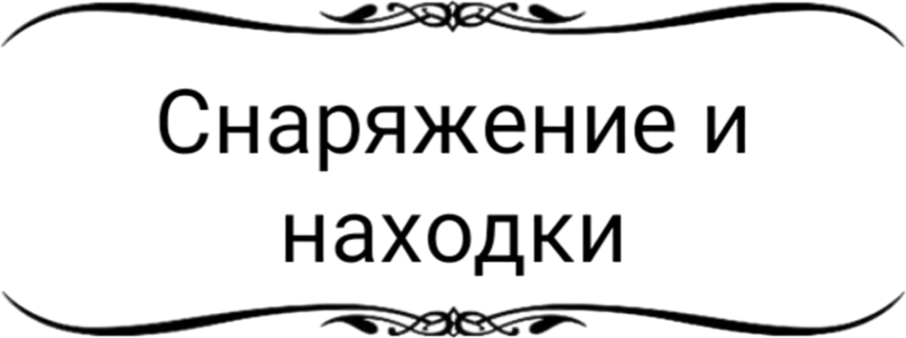

В сказочное королевство приходит беда. Злой волшебник Барлад Дэрт, поселившийся в таинственном и мрачном Черном замке в самом сердце Зачарованного леса, хочет взять в жены единственную дочь Короля. Получив отказ, он похищает Принцессу и с помощью черной магии погружает ее в волшебный сон. Много смельчаков, вызвавшись освободить Принцессу, отправились на поиски Черного замка, но ни один не вернулся назад.


Все, что будет записано на этих страницах, поможет вам в дороге. Перед вами — листок путешественника. Определив МАСТЕРСТВО, ВЫНОСЛИВОСТЬ, УДАЧУ и заклятия, запишите их туда — потом вам будет удобнее вносить все необходимые изменения. На этом листкеможете также записывать все, что найдете или узнаете в пути.
Ваше МАСТЕРСТВО показывает, насколько хорошо вы умеете сражаться; чем оно выше, тем лучше. ВЫНОСЛИВОСТЬ отражает вашу ловкость, волю к жизни, решительность и вообще пригодность к выполнению возложенной на вас миссии; чем выше ВЫНОСЛИВОСТЬ, тем дольше вы можете прожить и тем выше ваши шансы на успех. УДАЧА показывает, насколько вы от природы удачливы. В волшебном королевстве добиться успеха помогают, прежде всего, удача и магия. Эти показатели будут устанавливаться в начале игры

На протяжение игры вы часто будете встречать врагов, с которыми придется сражаться, если нет никакой возможности избежать этого или если сами не хотите этого. Сражение происходит подобным образом:
Действие 1-е. Враг кидает оба кубика. Число на кубиках прибавляется к его МАСТЕРСТВУ. Сумма покажет его СИЛУ УДАРА.
Действие 2-е. Киньте оба кубика за себя и прибавьте к полученному то МАСТЕРСТВО, которое будет у вас на момент боя. Это ваша СИЛА УДАРА.
Действие 3-е. Если ваша СИЛА УДАРА больше, чем у вашего врага, то вам удается ранить его. См. действие 4-е. Если же наоборот, то он ранит вас. См. действие 5-е. Если же они равны, то он парирует ваш удар, и вы продолжаете бой. См. действие 1-е.
Действие 4-е. Вы ранили вашего врага. Вычитается 2 из его ВЫНОСЛИВОСТИ.
Действие 5-е. Вы ранены. Вычитается 2 из вашей ВЫНОСЛИВОСТИ.
Действие 6-е. Теперь сражайтесь дальше (см. действие 1-е). И так до тех пор, пока ВЫНОСЛИВОСТЬ либо ваша, либо вашего противника не станет равна нулю. Это означает смерть. Если вы свели до нуля его ВЫНОСЛИВОСТЬ, то вы победили, и он убит. Если же ему удалось победить вас, то путешествие окончено. Вам придется начинать игру сначала.
В некоторых специально оговоренных случаях вам будет предоставлена возможность бежать с поля боя. Тогда следуйте указа - ниям книги, но учтите, что в случае вашего бегства последний удар остается за врагом, и вы автоматически получаете -2 ВЫНОСЛИВОСТИ.

Если вам придется сражаться не с одним, а с несколькими врагами одновременно, то перед каждым раундом атаки вы должны выбрать, в чью сторону вы направляете свой удар. Противники кидают кубики. При этом с выбранным вами противником вы деретесь как обычно, но кроме этого вы должны сравнить свою СИЛУ УДАРА с СИЛОЙ УДАРА всех остальных врагов. При этом каждый, у кого СИЛА УДАРА больше вашей, ранит вас. Вы же можете ранить только вашего непосредственного противника, даже если ваша СИЛА УДАРА будет больше, чем у всех остальных.

В течение путешествия, в тех случаях, когда многое зависит от того, насколько вы удачливы, вам будет предложено проверить свою УДАЧУ. Но будьте осторожны! Проверка удачи связана с немалым риском, и если вы неудачливы, результат может быть самым плачевным.
УДАЧА проверяется следующим образом. Вы кидаете два кубика. Если результат меньше или равен вашей УДАЧЕ на момент проверки, то вы удачливы, и все разрешается в вашу пользу. Если же результат выше вашей УДАЧИ на момент проверки, то вам не повезло, и Судьба накажет вас за это.
Все это в тексте книги будет называться ПРОВЕРКА ВАШЕЙ УДАЧИ. Каждый раз, когда вам будет предлагаться ПРОВЕРИТЬ СВОЮ УДАЧУ, будет вычтено 1 из вашей УДАЧИ в данный момент. Скоро вы поймете, что чем чаще приходится надеяться на удачу, тем более рискованным это становится.
Каждый раз, когда вам предлагается ПРОВЕРИТЬ СВОЮ УДАЧУ, а вы не хотите этого делать или ваша УДАЧА равна нулю, считайте, что вы неудачливы.

Вы отправляетесь в путь налегке. С вами только ваш испытанный меч, за спиной — заплечный мешок, а в кармане — 15 золотых. Да еще к поясу пристегнута фляга с водой — вы можете попить из нее дважды, каждый глоток вернет вам 2 ВЫНОСЛИВОСТИ.
Однако по дороге вы встретите много вещей, которые вы сможете либо купить, либо взять с собой. Но помните: в ваш заплечный мешок можно положить только 7 предметов. Хотя в любой момент (кроме времени битвы) вы можете все что угодно вынуть из него и оставить, а положить то, что вам покажется более нужным. Обратите внимание, что деньги и оружие в заплечный мешок не кладутся, и вы можете брать их столько, сколько позволят условия конкретного параграфа.
К тому же в пути сможете при случае либо купить, либо просто найти что-либо съедобное (но помните: не все, что годится в пищу обитателям сказочного королевства, подойдет и для вас). Эту пищу вы можете либо сразу съесть, либо взять с собой (она займет 1 место в вашем заплечном мешке) и тогда восстановить столько ВЫНОСЛИВОСТИ, сколько она позволяет в любое время (опять же только не во время боя).